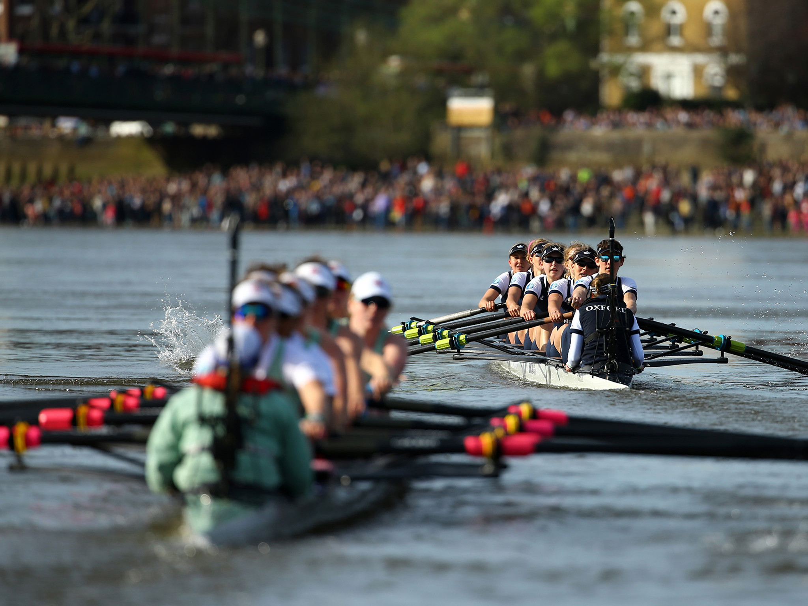
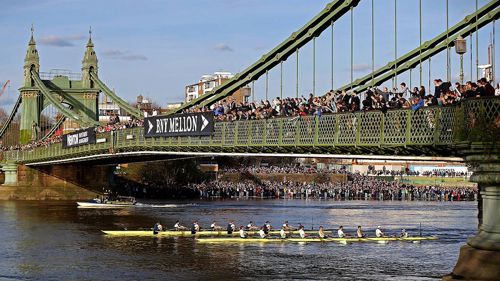

|
The river Thames in London has a vibrant
community of rowers and rowing clubs, and has a deep history steeped in tradition.
The Thames (also known as the "Tideway", due it being tidal) attracts rowers from all over the world to some of the largest annual races; the Henley Royal Regatta, the Head of the River Race, the Great River Race, and of course the Oxford and Cambridge Boat Race (also call "the Boat Race").   The sport attracts rowers of all ages, from school-age up through the "masters" ; there are competitive categories for all ages and abilities, including for octogenarians and for those with disabilities. The rowing clubs on the Thames are amateur private members clubs, and those owned by schools and university. There is a very strong and warm community on the river; rowing clubs both compete and support each other, and none more so that in matters concerning safety. |
About Thames Boat MarketThe Thames Boat Market exists to provide a market place, equally open for all clubs to used, moderated by its owner. Its aim is to be a service to the community, and a transparent community-run tool to help the sport flourish through the easy buying and selling of essential club equipment.OwnerThe Owner can suspend and resume the market place from trading, in the event of a system bug or problem. The owner can add (and revoke) a Market Admin role, so that others may join in the oversight of the market place.Market AdminsA Market Admin is able to grant other users the Club Owner role, which will allow those users to add their rowing boat club.Club OwnersThose with the Club Owner role may add a Boat Club. To that club that can add a stock of rowing boat. The can alter the status (For Sale / Not For Sale) of those boats, and remove them from sale completely. A boat Club Owner may temporarily mark their club as open or closed to trading, and may permanently remove their club. They may withdraw the funds from their club account at any point, and even if the boat market were itself suspended.BuyersAnyone with account is able to buy boats, the sales of which are recorded in a sales ledger.Future ImprovementsThe Boat Market is in prototype phase at the moment, and is available here for test. At the top of the there is a link for application example data which can we used to make testing easier and close to expected usage.There are many future improvements which can be added, including photos stored on IPFs, an immutable feedback system, and a React-based front-end (the creator allowed himself 5 days to learn React on this occasion, which proved woefully inadequate!), and future revisions should take the platform to the next level. In the meantime, the important core features of the underlying platform are in place. |